scene0224_00 Diagnostic GT projections. Red points are NOT masks. Approximate visibility uses vertex and sparse scan z-buffers. Unknown depth is not verified visibility.
Instance 0: 02871439 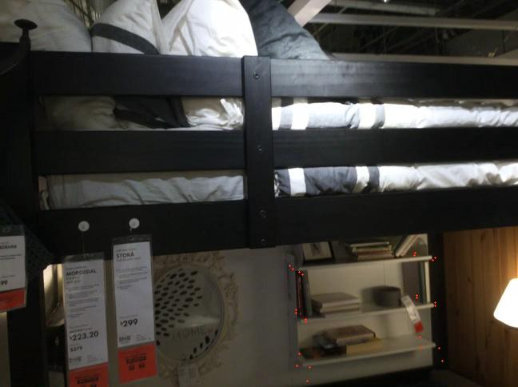
00200: frustum=24, approx=15 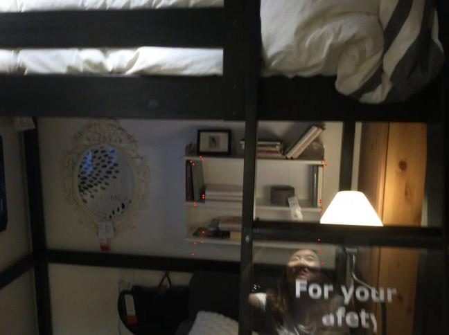
00273: frustum=24, approx=13 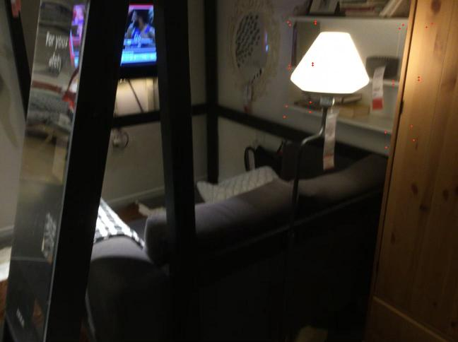
00011: frustum=24, approx=10 Instance 1: 04256520 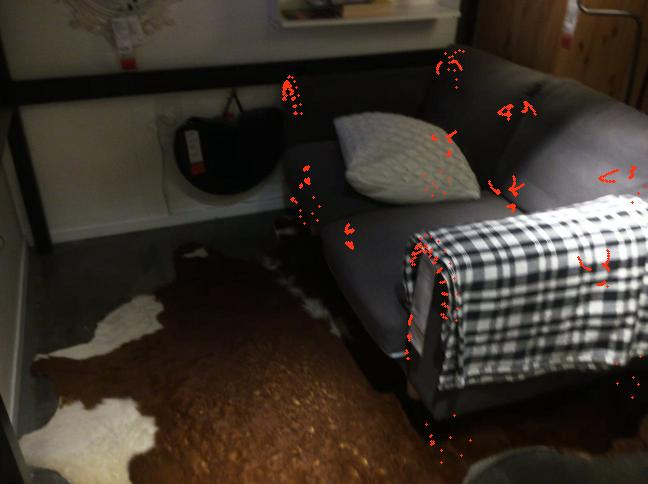
00230: frustum=723, approx=453 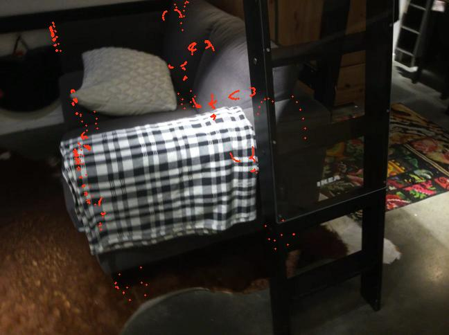
00249: frustum=736, approx=336 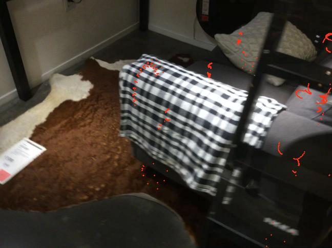
00112: frustum=536, approx=324 Instance 2: 03938244 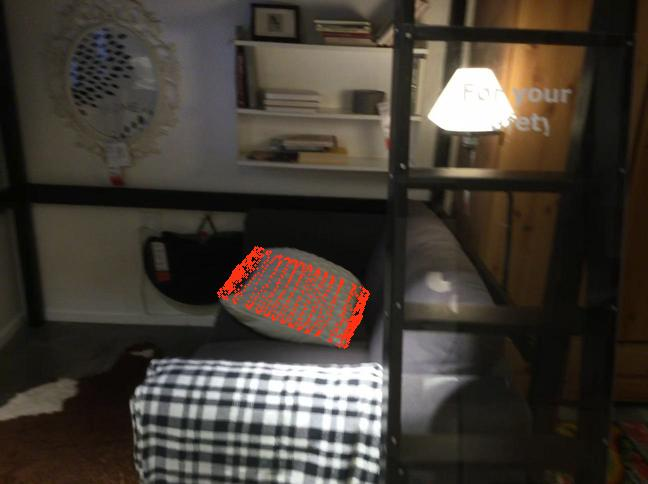
00258: frustum=986, approx=786 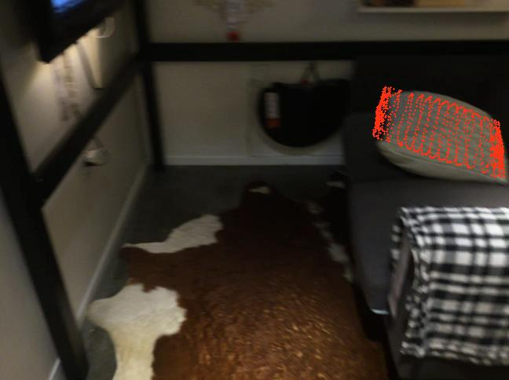
00143: frustum=986, approx=728 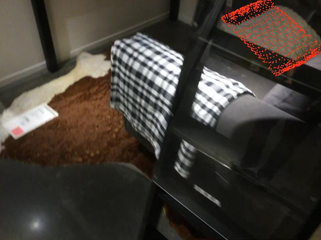
00110: frustum=964, approx=672 Instance 3: 02818832 00022: frustum=2885, approx=1890 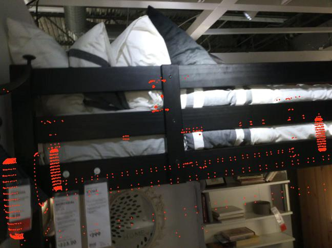
00206: frustum=2198, approx=1556 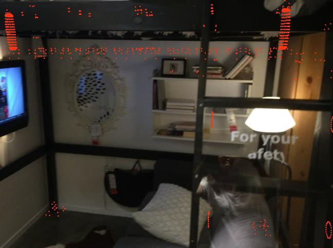
00267: frustum=1559, approx=1400 Instance 4: 02933112 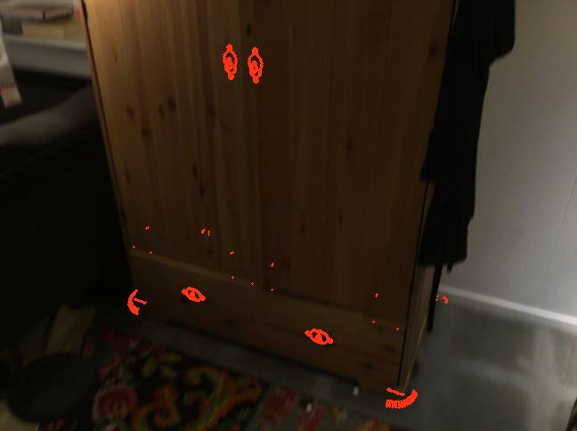
00065: frustum=2497, approx=2457 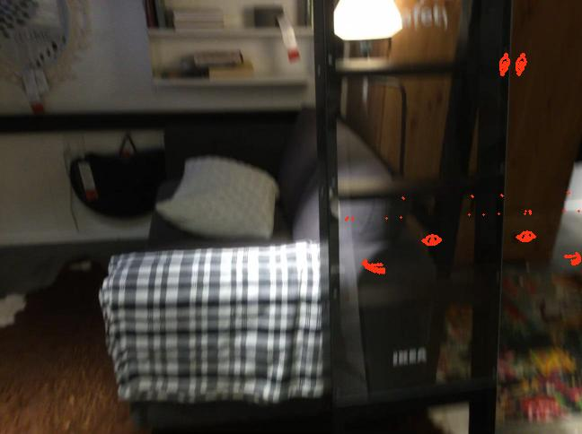
00254: frustum=2497, approx=1442 00162: frustum=2632, approx=1293